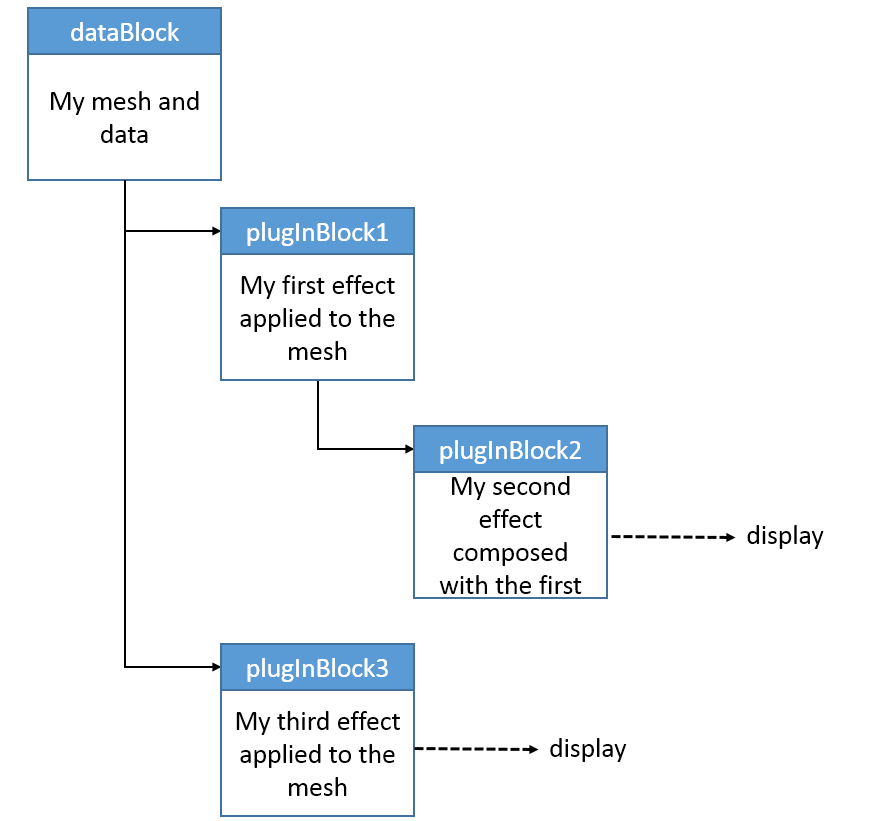
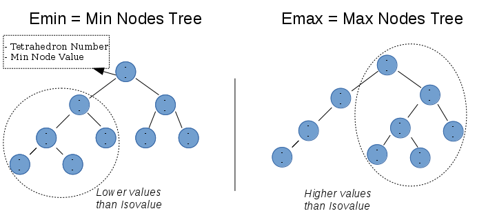

Being part of the OpenDreamKit project, SciviJS has been conceived in order to offer an open source tool useful for loading, displaying and analysing 3D-mesh-data in a standard web browser. SciviJS doesn't need any additional plugins to visualize the 3D mesh, and is supported by any last version of web browser. This means that it is particularly easy for anybody on any computer to display 3D-mesh-data.
SciviJS for development contains three packages that you can clone from these commands:
hg clone https://hg.logilab.org/review/scivijs/scivijs-lib/This is the part containing all the library and the main source code for the application to run correctly with the block structure and the definition of the native plug-ins.
hg clone https://hg.logilab.org/review/scivijs/scivijs-gui/This is the package containing all the code necessary for the application to be displayed on a page of your web browser.
hg clone https://hg.logilab.org/review/scivijs/scivijs-demo/This is the package you will need if you just want to run a demo of SciviJS in your web browser. To do so, after cloning the package to your machine, you need to follow these instructions:
cd scivijs-demo
npm run install
npm run start
and browse to http://localhost:8000.
SciviJS Visualisation is based on a block structure which hierarchy can be chose by the user, the main block being the 3D object itself on which the user is willing to apply specific effects.

The hierarchy created by the user can be visualized as a tree where it can be chosen whether to display or not each branch of the tree (one block and all its children blocks. As explained in https://demo.logilab.fr/SciviJS/, there are already 7 native plug-in blocks, but the user can decide to add his own coded plug-in blocks. Until today,the plug-in blocks that can be displayed if the data is consistent with the type of mesh are listed below:
As explained before, the user has the possibility to create his own plug-in blocks. After creating a js file "myBlock.js" saved in scivijs-plugins/scivijs-plugin-myBlock/ by following this procedure of 4 steps:
Importing the code of the plugin block definition:
let SciviJS=require('scivijs'); let PlugInBlock = SciviJS.PlugInBlock; let block_registration = require('./gui/block_registration'); let widgetsDescription = block_registration.widgetsDescription;
Defining your custom block:
class myBlock extends PlugInBlock { constructor (parentBlock, defFactor=1) { // Only initialize setters (maybe getters if you want), this, // and your custom parameters let setters = { 'yourSetter': (param) => {this._yourSetter=param;} }; super(parentBlock, setters); }; // Method that initialize your node structures and geometries _process () { //Your code here }; _custom_function(){ //Your code here } _setInput (dataName, componentNames) { super._setInput(dataName, componentNames); //Your code here } }
Create a widget description "block_registration.js" of your new plug in block to store in a repository called ./gui/ , and export it. Example:
let widgetsDescription = [ { type: 'inputData', inputDataSize: 1, info: 'Input vector used for deformation' }, { name: 'ZWarp Factor', type: 'FloatSlider', info: 'Factor used for Zwarp effect', parameter: 'defFactor', min: -1000, max: 1000, param : true } ] ; module.exports = widgetsDescription;
Export your new Plugin Block and its widget description
module.exports = {block:myBlock, blockType:'myBlock', widgetsDescription:widgetsDescription};
Import your block in scivijs-gui in order to be able to display it, in the file src/SciviJS_GUI.js, and insert it in a plugin array:
let myBlock = require('scivijs-plugins/scivijs-plugin-myBlock/myBlock'); plug_arr.push(myBlock);
(optional) Code your WebAssembly block (see below for an quick explanation of WebAssembly) in C++ and store it in ./utils/wasm
WebAssembly is a new tool for the web developer that allows to compile low-level source languages like C, C++ which generates a ".wasm" binary file. That file can then be directly run into the web browser. WebAssembly doesn't come as a replacement of the javascript but as a complement of it. It is designed to run along javascript and share functionalities. The role of the web developer is to decide which part of the code is more interesting for his application to be run by WebAssembly or Javascript.
This very recent technology is actually created as an open standard for the W3C Webassembly Community Group. WebAssembly is enabled for Firefox 52+, Chrome 57+, Edge 15+, Opera 44+, Safari 11+.
In order to compile your C/C++ code into WebAssembly it is necessary to have a tool like Emscripten. This is what can compile and create your WebAssembly module, accesible from your Javascript. To install it you can follow the instructions on the Mozilla Developer webpage explaining precisely how to do it depending on your work environment. You can also check the Alon Zakai global presentation of using Emscripten for webassembly on this site.
Once Emscripten is all set up you can try out to define your own C/C++ functions and compile it with Emscripten using the following command line :
em++ --bind -g4 -o myJStarget.js myCppCode.cpp -O3 -s WASM=1 -s BINARYEN_ASYNC_COMPILATION=0 -s ALLOW_MEMORY_GROWTH=1
In this example, several options have been precised for the realization of a particular example:
- -O3 : Optimized type of compilation
- -s WASM=1 : Return format type ".wasm"
- -s BINARYEN_ASYNC_COMPILATION=0 : Removal of the asynchronous compilation of WebAssembly
- ALLOW_MEMORY_GROWTH : Allow Webassembly to benefit from a bigger memory space
- --bind : precision for Emscripten to allow Embind to make the bindings between C++ functions and Javascript function during the compilation. More precision on Embind here.
- -g4 : allows to see the C/C++ source code in your browser's debugger
Note that this compilation will only work if you are in virtual environment which can be activated by source ./emsdk_env.sh , when you are in the repository where you have installed Emscripten.
For a full description of the options available when compiling to WebAssembly, see the github page dedicated to it.
Your C++ file needs to include the Emscripten and the Embind libraries:
#include <emscripten.h>
#include <emscripten/bind.h>
It also needs to precise what are the effective bindings :
EMSCRIPTEN_BINDINGS(test) { class_<class_name>("class_name") .constructor<args>() .property("prop",&Tetra_node_val::prop) ; function("function_name",&function_name,allow_raw_pointers()); }
Each class, type or function that need to be exported to Javascript has to be defined in this part of the C++ code. The argument allow_raw_pointers() allows to get rid of the copy of a random object just giving in arguments its address.
The following portion of code allows the developer to access his classes and functions directly from the Javascript. Example:
new_object = new Module.class_name(args);
SciviJS being a tool for scientific data visualization on the web, it needs to be really responsive. Javascript is definitely not the best language to use if we want to have effective fast calculations on plugin-blocks such as IsoSurface.
To get rid of that limitation an idea is to use WebAssembly as a substitute to Javascript for these kinds of calculations, and write the algorithm of the Isosurface determination, for example in C++, which is much more appropriate.
For the integration of the C++ part into the Javascript previously existing, it is necessary to apply all the methodology above-mentioned.
The idea of the algorithm is to create two binary search trees that contain one node for each tetrahedra of the 3D mesh. Each node of the first tree contains the lowest value of the tetrahedra it represents and the number of the tetrahedra associated, and each node of the second tree contains the biggest value of the tetrahedra and the number of the tetrahedra associated.
Once those two trees are determined, a neccessary and sufficient condition for a specific tetrahedra to be cut by the isosurface, is to own at least one node with a smaller value than the isovalue, and at least one node with a bigger value than the isovalue.

To identify nodes that respect both criteria, the first step is to extract the part of the first tree with lower values than the isovalues, and the part of the second tree with bigger values than the isovalue. Then, the only remaining operation is calculating the intersection of these two extracted parts from the trees.
This last operation is what is the most time consuming for the algorithm because it needs to sort two arrays each for each change of isovalue. This time becomes really significant for meshes with a lot of tetrahedrons(more than 100 000).